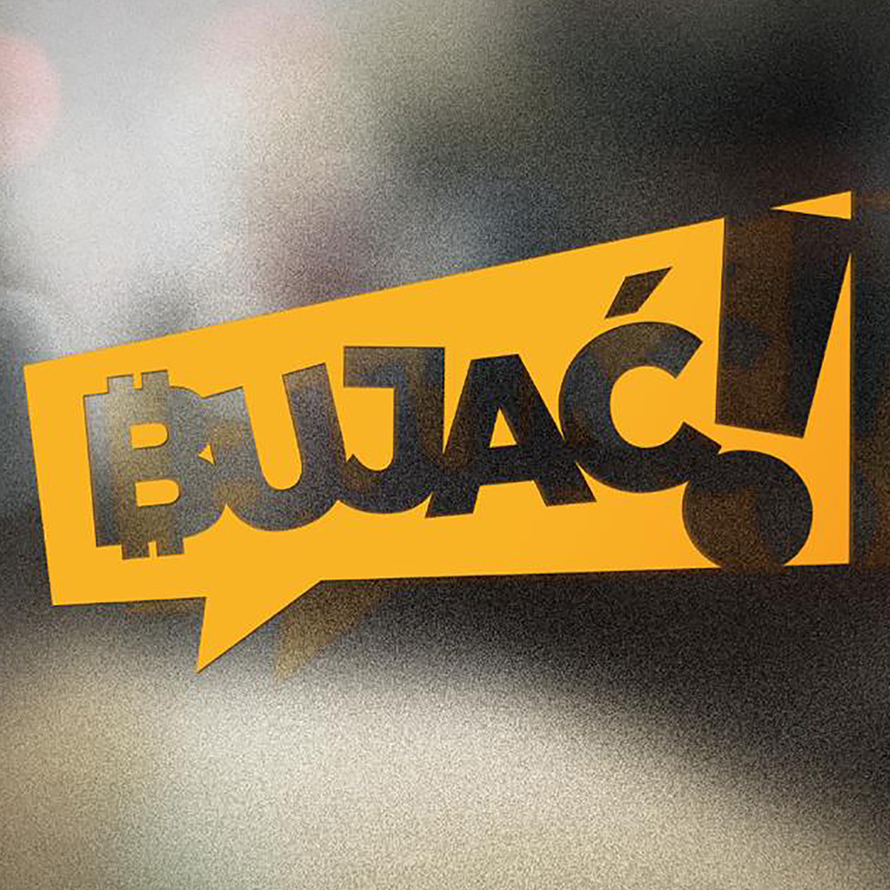
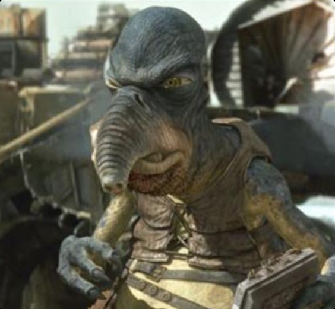
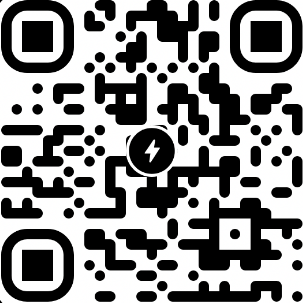
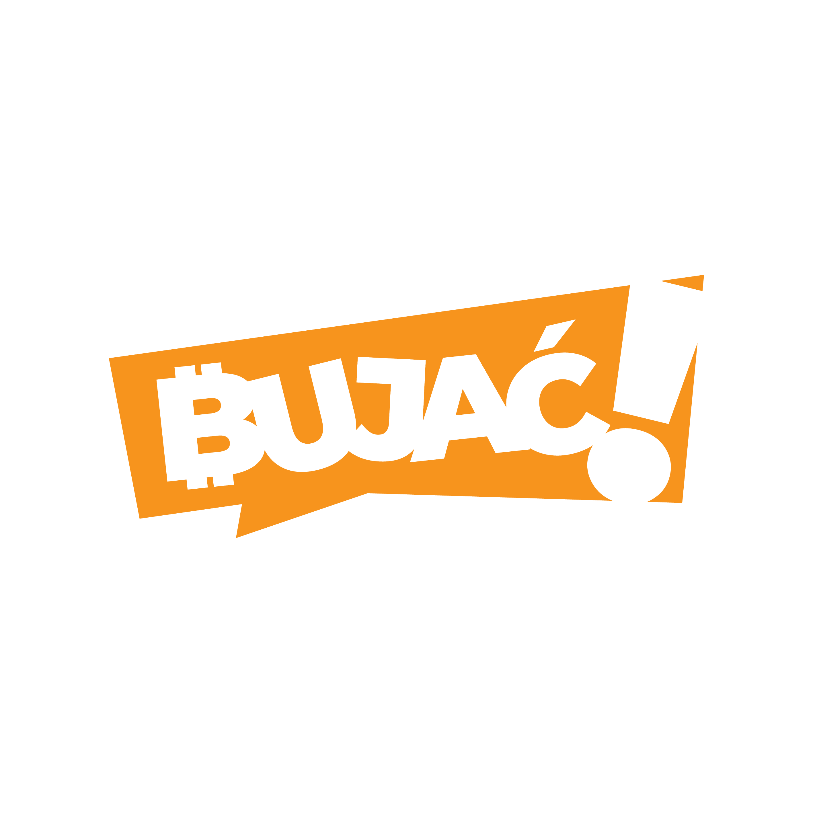

POLSKI PODCAST / 2025—2026
BUJAĆ!
Rozmowy, których nie trzeba było nikomu zgłaszać.
18 rozmów / 4 serie / 115 zapisów

ZAPIS
Bo nikt nam nie może zabronić.
Polskie rozmowy o pieniądzu, wolności i budowaniu poza systemem.
Bujać! mówi po polsku o Bitcoinie, NOSTR, prywatności i własnych drogach komunikacji.
Pełny tekst: „Po Co To Jest?” ↗Rozmowy i docinki
Ładowanie katalogu…
Brak wyników. Zmień filtr albo hasło.
Pliki są
ważniejsze.
Odcinki trafiały do RSS, NOSTR i na własne serwery. Platforma jest tylko wejściem.



POZA EKRANEM
Spotkajmy się.
Rozmowa nie kończy się na playerze. Tu są ludzie, spacery i rzeczy do zrobienia razem.
Dwadzieścia Jeden
polska społeczność na Telegramie ↗
Bitcoin Walk
Warszawa / spacery i rozmowy ↗
Bitcoin FilmFest 2027
24–27 czerwca / Warszawa
DOBROWOLNIE
Puść zapa.
Jeśli ta robota ma dla Ciebie wartość, możesz wesprzeć ją bitcoinem. Bez formularzy i pośredników.
Bitcoin / on-chainStrategiczna rezerwa projektu
bc1q8m269ngu09zt4cg2menjts9vprpf2hf69wddad
Otwórz portfel ↗
Lightning AddressZap w sekundę
sats@bujac.pl
Skanuj kodem QR albo kliknij, by otworzyć portfel Lightning. Jeśli masz rozszerzenie WebLN (Alby itp.), zapłacisz jednym kliknięciem.